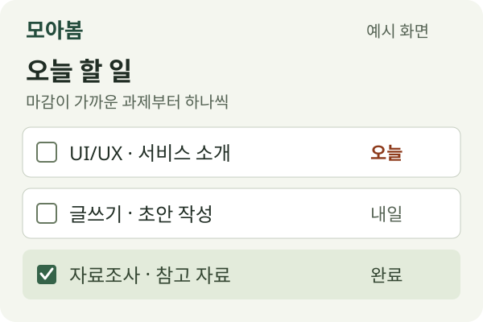

서비스 소개
모아봄은 여러 수업의 과제와 마감일을 정리하고 싶은 대학생을 위한 과제 관리 서비스입니다.
학교 공지와 메모를 오가며 과제를 찾느라 번거로웠나요? 수업별 할 일을 모으고, 마감이 가까운 과제부터 살펴보고, 끝낸 과제를 확인할 수 있는 서비스를 기획하고 있습니다.

주요 기능
-
수업별 과제 모아보기
과목 이름, 과제 내용, 마감일을 함께 정리해 여러 수업의 할 일을 한곳에서 확인합니다.
-
마감일 순서로 살펴보기
제출 기한이 가까운 과제부터 확인하며 오늘 먼저 시작할 일을 정합니다.
-
완료한 과제 확인하기
끝낸 과제를 완료로 표시하고 아직 남은 과제를 구분해 다음 할 일을 찾습니다.
할 일을 적고, 하나씩 끝내요
과제 이름을 적어 보고 마감과 완료 상태가 어떻게 표시되는지 살펴보세요.
지금 해야 할 일은 무엇인가요?
0 / 30자
내 과제 카드
과제 이름을 입력해 주세요
마감이 가까운 순서로 살펴봐요
급한 일부터 찾을 수 있도록 마감 표시를 함께 보여 줍니다.
- 오늘
글쓰기 초안 다듬기
- 내일
과제 이름을 입력해 주세요
- 3일 뒤
발표 자료 모으기
과목과 마감일은 화면을 살펴보기 위한 예시입니다.
끝낸 일은 완료로 표시해요
내가 적은 과제
과제 이름을 입력해 주세요
입력한 이름과 완료 표시는 이 화면에서만 바뀌며, 새로고침하면 초기화됩니다.
이용 방법
-
수업과 과제를 적어요
과목 이름과 과제 내용, 마감일을 입력합니다.
-
오늘 할 일을 골라요
마감일을 확인하고 먼저 진행할 과제를 정합니다.
-
끝낸 과제를 표시해요
제출을 마친 과제에 완료 표시를 하고 남은 일정을 확인합니다.
시작 알림 신청
모아봄의 출시 소식을 전할 알림 기능을 준비하고 있습니다. 사용할 이메일 형식을 미리 확인해 보세요.
이메일을 입력한 뒤 확인해 주세요.
입력한 주소는 저장하거나 전송하지 않습니다. 실제 알림 신청과 이메일 발송은 아직 지원하지 않습니다.